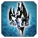

|
Version 45
Buildings
 Cybran Stage 1 Hive Cybran Stage 1 Hive
 Aeon T2 Shield Aeon T2 Shield
Slight Rebalance to the sheild to make it more duruable like all other t2 shields and have an upgrade.
- Structure Health:
150 → 220
- Upgradable:
Faslse → True
- DeathAnimationSpeed:
0.5 → 1.5
- BuildRate:
13.66 → 14
 Aeon T3 Shield Aeon T3 Shield
Slight Rebalance to the sheild to make it more duruable like all other t2 shields and have an upgrade.
- Structure Health:
300 → 330
 Seraphim T2 Sonar
Rebalance based version to fit with t3 Sonar.
- Removed LOWSELECTPRIO Category
- Health: 1000 → 1375
- EconomyThreatLevel: 4 → 3
- MassCost: 400 → 150
- EnergyCost: 6000 → 3700
- Buildtime :600 → 620
- RULEUCC_Dive: True → False
- RULEUCC_Guard: True → False
- RULEUCC_Move: True → False
- RULEUCC_Patrol: True → False
- RULEUCC_RetaliteToggle: True → False
- RULEUCC_Stop: True → False
- SelectionPriority: Null → 5
- SonarRadius: 350 → 250
- Wreckage_LAYER_Sub: True → False
- Upgradable: False → True
- All Lines linked to the Submersable parts have been removed
Seraphim T3 Sonar
Rebalance based version to fit with t3 Sonar.
- Added 'SUBMERSIBLE' & 'CQUEMOVE' in Category
- >HP: 2100
- EconomyThreatLevel: 4
- Submersable: True
- MassCost: 1.1K
- EnergyCost: 10.1K
- BuildTime: 750
- Added RULEUCC_Dive and is set to True
- RULEUCC_Guard: False → True
- RULEUCC_Move: False → True
- RULEUCC_Patrol: False → True
- RULEUCC_RetaliteToggle: False → True
- RULEUCC_Stop: False → True
- SelectionPriority: 6
- SonarRadius: 450
- VisionRadius: 32
- WaterVisionRadius: 24
- BuildOnLayer_Land: True → False
- BuildOnLayer_Sub: False → True
- BuildOnLayer_Water: False → True
- MaxAcceleration: 3
- MaxBrake: 3
- MaxSpeed: 3
- MotionType: 'RULEUMT_SurfacingSub'
- TurnRate: 25
- TurnRadius: 5
- SubSpeedMultiplier: 0.5
- Wreckage_LAYER_Sub: True
 UEF T3 Kennel UEF T3 Kennel
Slight Rebalance to the sheild to make it more duruable like all other t2 shields and have an upgrade.
- Added 'BUILTBYTIER3ENGINEER' To Categorys
- Added 'BUILTBYTIER3COMMANDER' To Categorys
- MassCost: 500 → 1100
- EnergyCost: 2500 → 5400
- DifferentialUpgradeCostCalculation: False → True
 Cybran T3 The Swarm Cybran T3 The Swarm
Slight Rebalance to the sheild to make it more duruable like all other t2 shields and have an upgrade.
- EnergyCost: 6416.66 → 6417
- MaxBuildDistance: 25 → 30
- VisionRadius: 15 → 25
 Aeon Paragon Aeon Paragon
Slight Rebalance to the sheild to make it more duruable like all other t2 shields and have an upgrade.
- MassCost: 250.2K → 350K
- EnergyCost: 7.506M → 7.6M
- BuildTime: 325000 → 350000
- MaxEnergy: 1M → 750K
- MaxMass: 10K → 5K
- FootprintSize: 7 → 5
Back
|